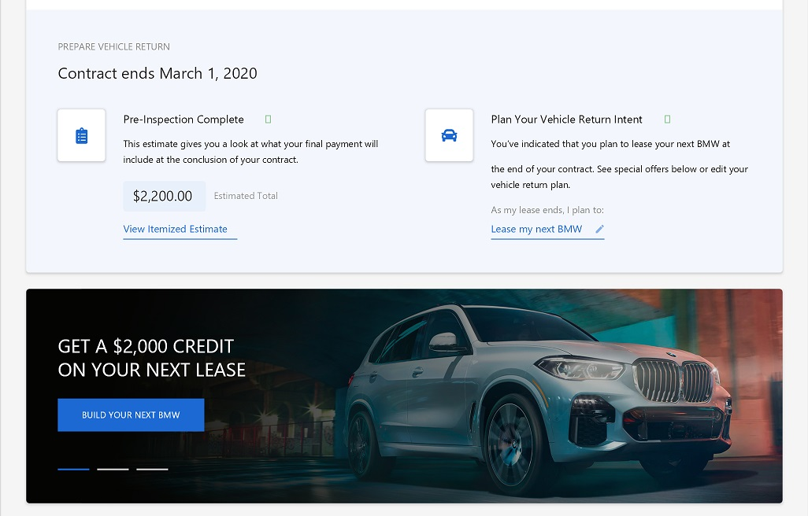
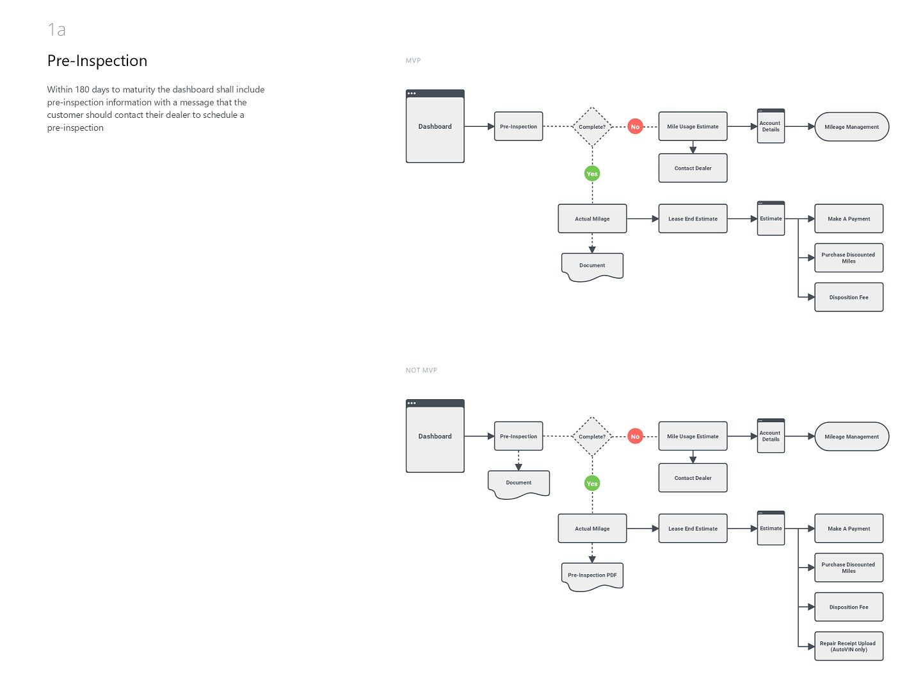

BMW Financial Services
notification_important Credentials needed for full experience.I collaborated with and consulted the internal design team to develop the front-end of the online payment platform for customers who leased or purchased their vehicle through BMW Financial Services. Working directly with the BMW back-end engineering team, we collaborated together to develop a streamlined experience for our users. We coordinated with BMW in an Agile environment and I had weekly phonecalls with the engineering team.
Built in an Angular environment, this project served as a staple account for Partners + Napier. BMW was so enthuastic about our partnership and ability to quickly iterate on their needs, that this project outlasted the relationship of P+N serving as BMW's agency of record. No other project was continued with BMW besides this.
The vast majority of the front-end of this project was developed by a team of two developers, including myself. Over the course of two years, I became intimately familiar with the business needs and branding of BMW. I was involved in every internal design review meeting for each new feature and requirement, and provided feedback to our internal design team from a UX and development feasability perspective.
Having been involved in this project from the very start, I worked with the designers to come up with solid user flows that made complicated concepts and paths feel easier for the user.
Logowarming
This project began as the brainchild of an employee at Partners + Napier, Andrew Scott, and was completely funded by our company. Working with one UX designer, Marco Fesyuk, he and myself created this unique experience which encouraged businesses around the Rochester community to take action and become involved in climate change awareness. I am the sole developer of this digital experience.
The idea behind the project was to challenge local businesses to visit our site, put their logo into the "Logo Warming Machine", and then save the generated image to use on their social platforms. They would then send out a Tweet or Facebook post challenging other businesses to do the same, and donate to the Rochester People's Climate Coalition.
Over a dozen local businesses took part, including the Rochester Museum and Science Center, RIT, Rochester Regional Health, The Little Theatre, Causewave, Abundance Coop, and more. The Democrat and Chronicle published an article about our cause. View the hashtag on Twitter.
The Vote Needs U
As a Creative Technologist and front-end developer on this internal project at Partners + Napier, I garnered 4 Rochester Addy Awards with my team, including a gold medal. This clever campaign helped spread awareness of voter registration and continues to be an ongoing internal passion project for P+N.
The Vote Needs U quickly became the top-rated project on The Drum's "work of the week" section. The reputable global media platform, and biggest marketing website in Europe also published an article detailing and praising our work on the project.
We also created a Chrome extension which targets key phrases on websites, such as Net Neutrality, and converts the styling to match our campaign. Hovering over the word will then open a dialog to share the issue on social media, or find your local polling place.
Rakuten Optimism
Partners + Napier was tasked by Rakuten to create a visually stunning digital experience to promote their first ever digital innovation conference in the United States. I worked closely with the UX designer and was involved in all internal design reviews. I developed this project from scratch using Nunjucks, Javascript, and HTML.
Working with our sister agency, George P. Johnson, P+N was tasked not only with the digital experience, but also event acquisition. I was tasked with research and implementation of the event acquisition software on the site. We were able to surpass the original ask of the client for this event — the client's satisfaction led us to go on to maintain and handle the following years' events, which have featured very prominent figures in e-commerce, marketing, and entertainment — including Shakira and Usher.
I also set up and maintained the database whereby users would submit their name and company information during the pre-registration period so that we could collect analytics and determine sponsorship opportunities.
Xerox® Docushare® Flex
This digital experience was both designed and developed entirely by myself using Handlebars, Javascript, Greensock, Particles.js, and HTML. I worked directly with Xerox to understand their requests, presented my designs to the client, and carried on to the development and deployment of the experience on Xerox's site. Part of this client request included a homepage banner takeover, which was also designed and implemented by me.
This project showcases Xerox's cloud-based content management software, used by many large international corporations.
Highmark Six Word Story
Ernest Hemingway once bet a group of men that he could write a novel using only six words - his answer: "For sale: baby shoes, never worn." We took this idea and created an interactive social campaign for Highmark where I developed a tool which allows users to input their own life story using only six words.
I am the sole developer of this project, and I also created the database which contains all stories saved by users. I created a PHP-based system whereby user-generated stories are saved on a server into a folder accessible by Highmark. Highmark then goes through these stories and cherry-picks the selects and copies them into a separate folder. This separate folder is used to dynamically populate the example stories shown near the top of the page.
The story generator uses the HTML canvas element along with Javascript to generate a custom image on-the-fly which can be saved and shared by the user. I also handled form validation and censorship of words which we would not have wanted associated with the brand. This project was also featured in The Drum.
Strong Museum of Play
I have been fortunate enough to work with the amazing Strong Museum of Play a few times: both through freelance work in 2015, and through my career at Partners + Napier. I worked on this project which was part of their Powered By Play campaign to raise funds for their beautiful new construction projects. This expansion campaign is the driving force behind the "Neighborhood of Play — a new, vibrant, walkable neighborhood, revitalizing the downtown area surrounding The Strong".
Our task was to design and develop three games which would live on the Powered By Play landing page on The Strong's site. I developed the first game entirely from scratch using canvas, Javascript, and HTML. The game garnered many plays and shares, and even sparked an internal competition within Partners + Napier to get the high score. I am upset to say that I was beaten in my own game by a handful of folks...
View and play the game below.